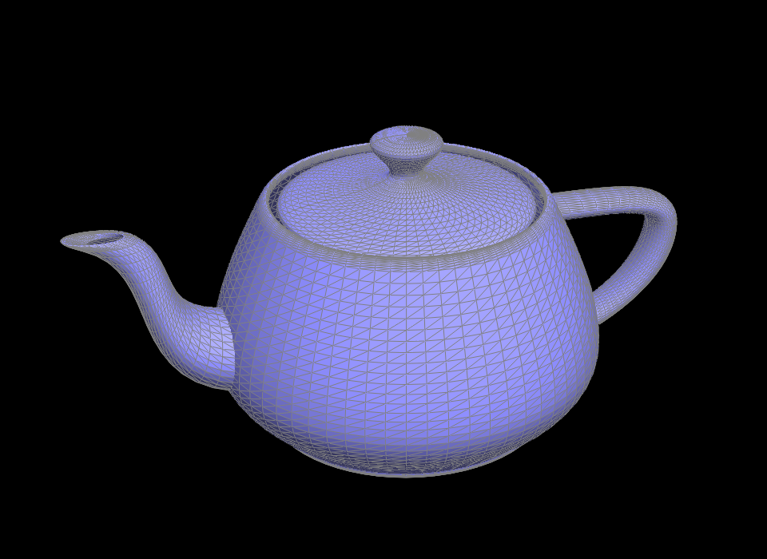

CS 184/284A: Computer Graphics and Imaging, Spring 2024
Sadhika Akula
Part 1: Bezier Curves with 1D de Casteljau Subdivision
Part 2: Bezier Surfaces with Separable 1D de Casteljau
Part 3: Area-Weighted Vertex Normals
Part 4: Edge Flip
Part 5: Edge Split
Part 6: Loop Subdivision for Mesh Upsampling
In this homework, the goal was to implement a geometric modeling techniques. I was able to implement the topics we had learnt in class including Bezier curves and practice half edge mesh representations throughout this homework. The most interesting part (and challenging) was understanding and correctly using the half edge mesh representation. I found that drawing images of before and after and writing out the pointers before coding to be helpful for this. I've had previous experience doing modeling in Maya so it was really cool to see the math and look at what happens to each triangle when you add subdivisions or box model.
De Casteljau's algorithm works by using recursive linear interpolation to evaluate points on Bezier curves. Linear interpolation works by computing the control points at the previous level, based on t. Given an original n points, we evaluate n - 1 points to get a new set of points. We recursively repeat this until we get a final point.
step 0step 1step 2step 3step 4step 5/completedmodifiying parameter tFirst, I extend de Casteljau to Bezier surfaces by first calculating the evaluateStep on 3D points instead of 2D points. I then implemented the evaluate1D function by recursively calling evaluateStep for all n points and returning the final point. Finally, the evaluate function first evaluates n vectors using u as our parameter for t. Then, I evaluate these vectors in another axis using v as our parameter, which returns our final point. Ultimately, we extend to one more dimension to compute Bezier surfaces.
🫖 teapot!In order have cleaner Phong shading, we calculate area-weighted vertex normals for each face. In order to do this, I first found all vertices for a specific face. To find the normal vector to this face, I took the cross product of two perpendicular vectors and made sure that the normal was pointing outwards. Finally, I summed all the normals across all of the faces and returned the normalized output. Since I'm not modifying any halfedges, I also made sure to use HalfEdgeCIter.
flat shadingphong shading using normalsIn order to implement the edge flip algorithm, I first drew out this picture above and then wrote out all the pointers that changed throughout the flip and updated them accordingly in the code. Since edge flip doesn't require adding elements or deleting them, I found the implementation pretty straightforward and didn't face any bugs. I realized after completing this that a few operations and assignments could be simplified and accordinly updated that in my edge split implementation.
edge flip smirkedge flip (no wireframe)To implement, edge split I followed similar steps as edge flip but also added in a new vertex, two additional faces, and new halfedges and edges. I found the setNeighbors function to be quite useful here in order to update all of the pointers of one halfedge at once. Initially, I found no issues with my edge split function but when completing upsampling (below) I realized that a few halfedges were being modified incorrectly which allowed me to fix my implementation. I also added support for labeling the new vertices and edges with isNew = true in the edge split function so that when I edge split in unsample method only the new edges will be flipped.
edge splitedge split and flipI implemented loop subdivision by following the guidelines in the code. I started off by calculating and saving the new positions of the vertices to be updated in the future, using the equation (1 - n * u) * v->position + u * neighborPositionSum. I then computed the vertex position of a current edge using the values of the vertices sharing an edge and the equation (3.0 / 8.0) * (A->position + B->position) + (1.0 / 8.0) * (C->position + D->position). I also saved a list of originalEdges during this process so that I could split only the mesh edges that were from the original mesh in order to not run in an infinite loop. Here, I updated my edgeSplit function to mark new edges as new so that I wouldn't overflip edges. I then flipped edges based on whether it was connecting an old and new vertex and if it was a new edge. Finally, I updated the position of all the vertices.
As we can see below, the mesh looks nothing like a cube as we increase subdivisions. We achieve a more spherical shape over time but not truly spherical as it maintains part of its squareness.
level 0level 1level 2level 3
level 4level 5level 6level 7By pre-splitting edges, we are able to reduce the sharp corners and maintain the shape of the original image. As we can see below, presplitting only one face keeps the flatness preserved while increasing subdivisions. This preprocessing helps because it creates more edges that can be subdivided which means we make even more edges when we flip, essentially adding more detail at each level.
pre-splitlevel 1level 2level 3yam 🍠The usefulness of loop subdivision can be seen on the teapot and the cow which achieves a less geometric look and reduces sharp corners using these operations.
teapot beforeteapot aftercow beforecow afterCoding up loop subdivision took a bit longer than the other parts due to some pointer bugs and keeping track of which halfedges were new, which led to some crumpled meshes during the debugging: